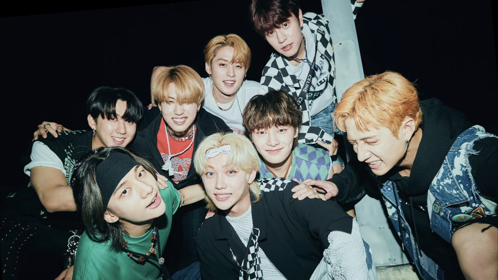

Support Stray Kids Comeback
'DO IT' release on Nov 21
Post last updated: Sep 28, 2025

Support Stray Kids comeback to help them get music show wins, awards, chart on Billboard and unlock more achievements~!
Here’s a summary of things you may do to support Stray Kids. Please read them all and see what you can do. It may look a lot specially for Baby STAYs but don’t worry because Stray Kids fanbases are there to guide you~! If you have questions about comeback information don’t hesitate to reach out to them ü§ó
STAYs can contribute for getting Music Show Wins, charting on Billboard and more!
Stray Kids Comeback Detail
ALBUM: “DO IT”
RELEASE DATE: November 21 2PM KST | 0AM ET
TITLE TRACK: “Do It” & “DIVINE”
Comeback Goals
What is a Comeback?
Here is an Introduction to Comeback for STAYs who will experience this for the first time or STAYs who wants to recall things about it. This guide is made and updated by SKZCBGuide .
For starters
Choose the things that works for you during a comeback. . * = level of priority (this is only base on my opinion).
-
You can do while working, studying, sleeping etc.
- stream on Korean digital platform ****
- stream on Stationhead/Spotify/Apple Music **
-
Taking a break / have spare time / can multi-task?
- stream the MV on YouTube ***
- vote on voting apps ***
-
You have more spare time?
- make more voting apps account and vote ***
- stream the MV more ***
-
You have extra funds?
- buy streaming pass / donate to streaming projects ****
- buy physical album ***
- purchase the songs from iTunes *
- go premium (YouTube/Spotify/Apple Music) **
-
Don’t have extra funds?
- join streaming projects for free streaming pass ****
- get 1-month free trial of premium (YouTube/Spotify/Apple Music) **
- use free YouTube to stream the MV *
Comeback breakdown
Music Show Win
A Music Show Win happens during their album promotion. The No. 1 song of the week is announced per music show and each music show has different criteria for it. Criteria is usually composed of YouTube streaming (FREE), voting on apps (FREE), buying physical album, and streaming on Korean streaming platforms (biggest criteria).
FREE as long as you have access to internet.
Detailed information about all Korean music shows criteria and schedules are in Stray Kids Comeback Guide - Music Shows
Billboard
Billboard tabulates different weekly music charts to see popular music base on album/songs sales and streams from United States & Puerto Rico, Japan, and different parts of the world. It is a very popular music chart and Stray Kids charting on it may give them more opportunities. Stray Kids already topped Billboard 200 5x in a row during ODDINARY, MAXIDENT, 5-STAR, ROCK-STAR, and ATE. Aiming to get #1 for HOP will set them a new record 🔥
Follow Billboard SKZ for Billboard US/PR updates and guides for Stray Kids.
Guide for Sales and Apps
Korean Digital Sales
Korean digital sale is a BIG part of Music Show Win. It’s also a big factor in Award Ceremonies (ceremonies to award music, performances, artist of the year and more). To get a big digital sale point, STAYs are encouraged to stream the title track in a playlist and/or download the title track. Download counts as multiple streams. STAYs may stream on MelOn, Genie, Flo, or Bugs. Some of it needs verified account but some don’t. You may buy your own verified account and streaming pass by yourself or you may stream for free by joining a digital streaming team that is funded by STAYs’ donations. You may also donate any amount, it will be a big help!
Streaming is not hard! You just have to set your account and settings, make playlist, and leave it play for hours üòÅ It’s advisable to join a streaming team if it’s your first time streaming on Korean platform so the team can guide you.
For details and inquiries about these streaming platforms, you may reach out to Stay Department and follow them for updates.
Physical Sales
Buying physical albums may count toward 3 different charts: Hanteo, Circle Chart (formerly Gaon), and Billboard. Music Show Wins and Korean Award Ceremonies uses Hanteo / Circle Chart for criteria.
Check out this page by Stray Kids Comeback Guide to see the list of stores you may pre-order physical album and which chart each store’s sale counts to. Stores may also have exclusive benefits.
For the album sales it is automatically counted on Hanteo Chart when you successfully purchased and shipped your album, the same thing for Billboard. Circle Chart counts the albums shipped to stores where the albums can be bought.
Voting
Voting is important to give Stray Kids Music Show Wins. It’s one of the easiest we can do as a fandom! Each music shows have a designated app where we can use to vote for SKZ. Some of it needs to collect points (such as chamsims, heartbeats) to be able to vote.
Visit TeamSVS' Comeback Guide for music show voting app tutorials and schedules.
Follow TeamSVS for music shows, awards, and promotional ads voting updates.
YouTube Streaming
One of the easiest and free to do is to stream the MV on YouTube. It’s advisable to get YouTube Premium for less bot suspicion. You may get a 1 month Premium free trial and make sure to cancel it before the 1 month ends to avoid paying for it after the free trial ends. Streaming without premium is also okay.
There are different methods to stream an MV a lot.
Manual Method
- Log in to your YouTube account.
- Go to the video by doing any of these:
- Searching with the keyword for example “Ïä§Ìä∏ΆàÏù¥ Ìǧ϶à [title track]” or “Stray Kids [title track]”.
- Clicking from home page or recommended video.
- Clicking the shared link of the video.
- Stream the video with proper setting. Follow do’s and don’ts:
- After watching the video: like, leave a good comment about the MV (don’t spam!), and share to your SNS or website.
- Quality should be at least 480p.
- Volume should be at least 50%.
- Speed must be normal.
- Don’t skip time, pause, and replay.
- Turn off autoplay.
- If using desktop/laptop don’t stream on multiple tabs or windows.
- If streaming with more than one device, make sure that different accounts are logged in and device are in different IP address.
- ❗ Avoid using split screen, streaming on background or pop-up screen even with Premium account. This will fall to low quality playback which means the views may be deleted.
- Stream other videos (fillers) around 3-4 videos with a total of at least 10-min long before you watch the MV again. Example videos are Stray Kids MV, skz-player, skz-record, performances from different channels, etc. Make sure you don’t stream the same videos every time you stream in between the MV.
- Repeat from step 2.
You may see different tutorials on how to do manual streaming but the most important thing is to not let YouTube think you are a robot. The following are my personal tips:
- Interact with good comments every other time. Be careful of bot comments. Make sure the comment are talking about Stray Kids and not a general comment.
- Either skip or don’t skip ads but if the ad is the Stray Kids MV do not skip it.
- Don’t stream for too long, you may rest after few rounds and then do it again.
- Log in to different accounts.
- Change methods of going to videos (step 2).
- Change number of fillers each round.
- You may either search or click recommendations for the fillers.
- Stream non-kpop videos, if you want to watch a video of a cat or a puppy then go :D. I personally recommend watching from “TedEd” channel, it’s educational and their videos are just around 5-minutes :D
Global Streaming
Aside from YouTube, streaming their music on platforms such as Spotify, Apple Music, etc is the easiest way to enjoy Stray Kids music. Aside from enjoying their music using your own playlists, it is helpful for Stray Kids’ if you stream their music using a focused playlist. It is a playlist currated to boost Stray Kids’ music streams by streaming more of their title track and/or latest single. There are also focused playlist so an album will reach a milestone sooner. You may make your own focused playlist, save and stream fanbases’ playlist, or most conviniently stream on Stationhead where you should connect your Premium Spotify/Apple Music account and the fanbases are the ones currating and controlling the songs for you.
You may find more information and tutorials for Youtube, Spotify, Apple Music, Stationhead and more on Stray Kids Comeback Guide's Global Streaming Guides
End note
Stray Kids always work hard for their comeback, they always say that they do it for STAYs. As a STAY, we can reciprocate this love by supporting them through our own ways but it’s better that we join forces as a fandom to reach goals together. As our leader Bang Chan said “When STAYs become one, hold hands & really unite, I feel like we’re unstoppable”
Let’s enjoy Stray Kids’ comeback and support them ❤️

This post was made to help STAYs visiting this website be aware of Stray Kids comeback and give an overview about the things we may do as STAYs for Stray Kids’ success. The guides linked here are not made by me and I’m not part of any of the fanbase teams mentioned. I included links that I see helpful. I wrote down the overview but some information may have changed. It’s best to follow Stray Kids fanbase accounts for faster update.